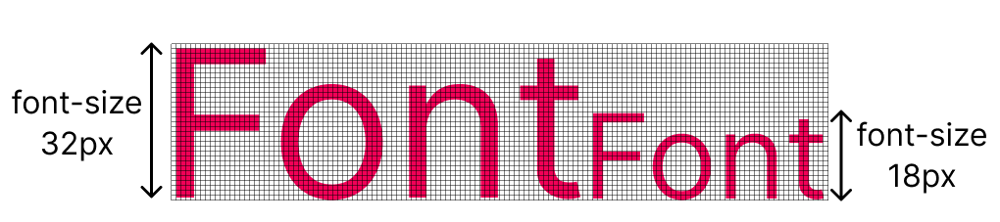

Pixels são usados como uma unidade de medida para controlar as dimensões dos elementos.
Você pode usar pixels para contolar o tamanho dos elementos. A propriedade font-size controla o tamanho do texto.
#p1 {
font-size: 32px;
}
Na maioria dos navegadores web, o tamanho padrão para texto em parágrafo, botões, lista e tabelas é 16px.
Você pode usar valores como small, medium e large para o tamanho do texto. Eles já têm unidades de pixel definidas.
Usar pixels como unidade de medida não é uma boa prática quando se trata de design web responsivo.
Para garantir que o design da sua página fique ótimo em qualquer tela, porcentagem (%) são usadas para definir dimensões relativas. Isso garante um design consistente em diferentes tamanho de tela.
Ao estilizar um elemento usando porcentagens (%), 100% seria o tamanho total do seu elemento pai.